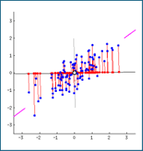
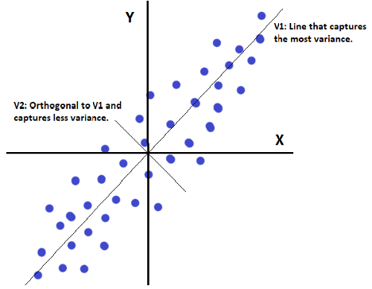

For every thermal, i.e. row in the thermal dataset, there is a large amount of weather variables (wind, temperature, cloud base, etc.). This can slow machine learning algorithms down and is difficult to visualize. The goal of this section is to introduce a method to significantly reduce the dimensions of our thermals dataset. Principal Component Analysis (PCA) is a powerful dimensionality reduction technique that reduces the number of features while retaining most of the information. This is achieved by finding correlations between variables and transforming them into new, uncorrelated variables (principal components).
High-dimensional data presents several challenges known as the curse of dimensionality:
PCA identifies combinations of features that explain the most variance. Each principal component is a linear combination of the original variables.
Dimensionality reduction decreases the number of input features while preserving as much relevant information as possible.


PCA requires numerical, continuous data where each column represents a variable and each row represents an observation. Data must be standardized, since PCA is sensitive to differences in scale. Categorical or text variables must be numerically encoded (e.g. one-hot). PCA assumes roughly linear relationships between variables for meaningful variance capture.
Link to GitHub repository and code examples.
Summarize PCA results and visualizations here.
Wrap up key insights and interpretations from PCA.